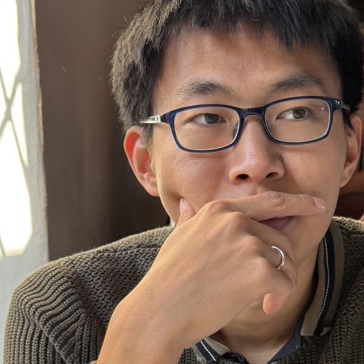

AW'">Andre (Jianyou) Wang
Ph.D. Candidate, Computer Science & Engineering
University of California, San Diego
About
I am a Ph.D. candidate in Computer Science and Engineering at UC San Diego, advised by Leon Bergen and Ramamohan Paturi (expected graduation October 2026). I work on LLM reasoning and post-training, with a focus on getting models to make calibrated predictions about the real world: forecasting clinical-trial outcomes, reasoning counterfactually, and improving their own skills through reinforcement learning.
Along the way I have built retrieval and long-context systems, benchmarks, and statistically validated LLM-as-annotator pipelines, many of them for biomedical science. I also collaborate with the ScienceDirect & Scopus AI teams at Elsevier. Before UCSD, I studied mathematics, computer science, and statistics at Duke University, working with Cynthia Rudin and Vahid Tarokh.
Research Summary
Real-world forecasting & counterfactual reasoning
Predicting clinical-trial outcomes via stepwise counterfactual "imagination," and a live, contamination-resistant benchmark to measure it. DeepImagine, CT Open →
RL post-training & self-improving curricula
Self-evolving curricula that teach a model a new skill with no ground-truth reasoning traces, breaking through apparent GRPO plateaus. Question-begets-Question →
Long-context modeling & retrieval
Linear-time Mamba document scanners that beat 7B embedding models, plus synthetic-data methods for instruction-following retrieval. Single-Pass Scanning, IR2, BIRCO →
Trustworthy evaluation at scale
LLM annotation pipelines validated against expert panels, and benchmarks for evidence extraction and risk-of-bias assessment. DORIS-MAE, RoBBR, EvidenceBench →
Current Research Interests
- Reinforcement fine-tuning for reasoning. Curricula, synthetic data, and training signals that let models keep improving when labeled reasoning traces aren't available.
- Forecasting and counterfactual reasoning. Teaching LLMs to make calibrated, prospective predictions about real-world events, evaluated without data contamination.
- AI for Science and DeepResearch agents. Building a temporal knowledge graph of 40M biomedical papers and training agents that learn how results and ideas turn into hypotheses, so they can anticipate future discoveries.
- Long-context modeling and RAG. Efficient architectures that read very long inputs in a single pass.
- Trustworthy large-scale evaluation. Benchmarks and LLM-as-judge pipelines with statistical guarantees.
Highlights
- 2026CT Open accepted to COLM 2026; the live prediction challenge is hosted at ct-open.net.
- 2026New preprints: DeepImagine and Question Begets Question.
- 2025Single-Pass Document Scanning selected as an Oral Spotlight (top 2%) at COLM 2025.
- 2025EvidenceBench at COLM 2025 and RoBBR at EMNLP 2025.